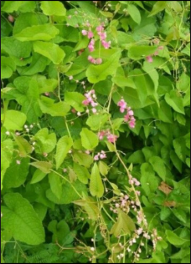

Info Tanaman Banyumanik

AIR MATA PENGANTIN
Kingdom: Plantae
Divisi: Tracheophyta
Class: Magnoliopsida
Ordo: Caryophyllales
Famili: Polygonaceae
Genus: Antigonon
Spesies: Antigonon leptopus
🌱 Budidaya
- Lingkungan: Cocok di area terbuka dan terkena sinar matahari penuh. Bisa ditanam di pekarangan, pagar, atau dinding rambat.
- Penanaman: Tanam langsung di tanah atau pot besar. Sediakan media rambat seperti kawat, pagar, atau tembok.
- Perawatan: Siram secukupnya, hindari kondisi terlalu becek. Pemangkasan rutin agar rapi dan merangsang bunga baru. Beri pupuk organik atau NPK sebulan sekali.
💡 Fun Fact
"Air Mata Pengantin" — Nama ini berasal dari kelopak bunganya yang berjatuhan, menyerupai tetesan air mata yang indah.
🍃 Manfaat
- Mempercantik pagar, taman, dan dekorasi acara dengan keindahan bunganya.
- Menarik perhatian serangga penyerbuk, membantu proses penyerbukan alami dan menjaga keseimbangan ekosistem.
- Berpotensi digunakan sebagai pengendali biologis ulat api, hama daun pada perkebunan kelapa sawit.